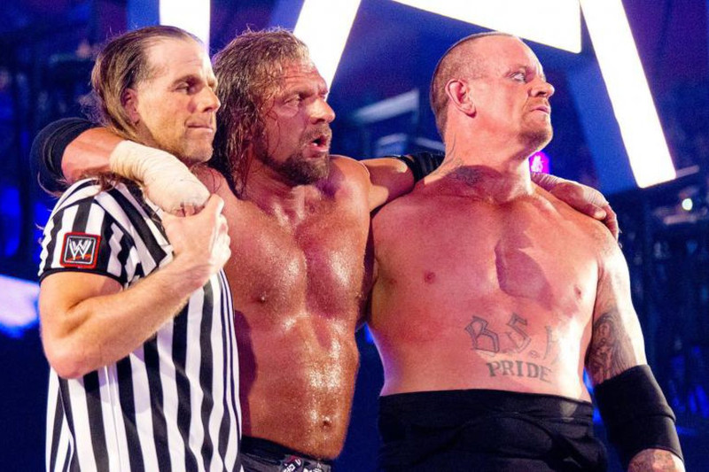

Internet
Acho que tudo começou comigo descobrindo Dragon City e criando um Facebook ao final de 2012, e pensar que isso vai fazer 10 anos, parece que foi em outra vida já...
WWE
Definitivamente, quando o pai me chamou para assistir na tv Undertaker e Triple H protagonizando o fim de uma Era, eu jamais poderia imaginar que seria o ponto de partida pros próximos acontecimentos da minha adolescência
Descobri a comunidade de LF's e simplesmente me fascinei, aquilo tudo era incrível, e logo após, acabei indo parar no Biz, me deparando com o Kart, onde tive outra paixão à primeira vista.
Kart
Era a coisa mais divertida do mundo correr Kart naquele hotel de pixeis, tantos amigos que fiz nessas duas comunidades, WWE e Kart, sem dúvidas as 2 maravilhas do século 2013 (Sim, o ano mais leve e divertido da minha vida inteira, daqui até a eternidade).
Games
Mas como nada dura para sempre, ambos acabaram pelo mesmo motivo: todos crescemos, o fim de uma Era outra vez... Então acabei indo para o Point Blank, e ali eu realmente levei ao next level, cheguei a desenvolver fadiga no pulso de tanto dar tiro no joguinho, mas ninguém pode negar que se eu tivesse a oportunidade certa, me tornaria facilmente um Pro Player (Modestias a parte, as always, anyway...) foram horas e horas dedicadas na frente de um monitor, o que basicamente resume a minha vida desde a primeira citação deste texto (biografia? xD), durante essa época de PB, começou o declínio escolar KKKKKKK, o que resultou em 3 anos perdidos e uma depressão profunda (mas isso veremos depois), até que depois de perceber que não tinha mais a diversão de antes, migrei do PB para jogar Friday the 13th, such a epic game, pena que arruinaram e acabaram com o jogo ( MAIS UMA VEZ o destino acabando com meus jogos >:( ]
Depois disso, vieram muitos jogos, eu nem vou citar a época do Playstation 2 porque aquilo realmente deve ter sido em outra vida (you ugly bastard, you're getting old!), mas sim, aquela foi a Golden Era, eram tempos tão simples e divertidos, mas enfim, joguei Mine, CS, GTA, PES, Stardew Valley, The Witcher, Red Dead Redemption, Doki Doki e muitos outros... então, parando pra pensar, jogos fazem parte da minha alma desde sempre e isso me alegra :)